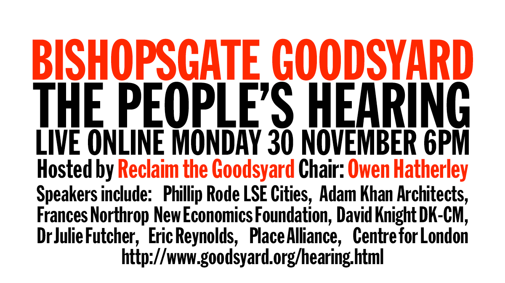

THE
PEOPLE'S
HEARING
RECLAIM THE GOODSYARD
The People's Hearing: PDF report

Adam Khan
Architect
Alec Forshaw Spitalfields Trust
David Knight
Urban Strategist
Eric Reynolds
Founder, Urban Space Management / Container City
Frances Northrop
Associate Fellow, New Economics Foundation
Julie Futcher
Researcher in climate responsive urbanism
Owen Hatherley
Writer on architecture / politics / culture
Philipp Rode
Executive Director of LSE Cities programme
Richard Brown
Deputy Director, Centre for London
With local residents and community groups
STOP THE MONSTER